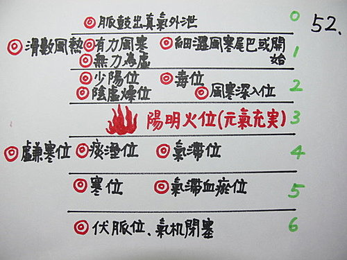

脈理醫理學 36.3：五層脈病機和用法（三）‥‥‥5層脈病機更進一步的解釋和用法（1）
作者：陳建元

那每一層的病機是否都只侷限於這一層呢？如痰濁之邪除了在第四層易出現之外，是否在其它地方也會出現呢？
答案是並不侷限在這一層，5層脈病機的功用是在分別一些隱藏的病機。第4層標註上痰濁的原因是因為這是痰的本位（濕），但其他地方也可有滑脈，譬如第一層就容易出現細緊滑脈，但這細緊滑的滑字當然跟第四層是不一樣的，因為第一層沒標註痰（滑），但卻標註外感（風寒），兩相對照就不會當把到第一層是細滑脈時不知作何判斷？而知道滑脈只是風寒（細緊）脈所引起的，細緊（外感風寒）才是主脈，滑脈只是副脈，所以開藥時以去風寒的藥比重加大，去痰藥為副脈，所以量較小即可。
由此可知五層脈病機的功用在於28脈在使用時，常常會遇到複合脈，而當複合脈的各脈表現的力度同等時，這時病機的判斷又會遇到瓶頸，譬如弦細脈，弦是氣滯，細是陰虛，但當實際用藥時，到底是下氣滯的藥要較重？還是下陰虛的藥要較重？這又成了一個難題！換言之，當力度表現同等時，這兩個病機中到底哪一個病機比較重的判斷又形成瓶頸！這時若參照5層脈病機就能解決這個問題，如上述弦細脈如在第2層則陰虛較重，若在第4層則氣滯較重。其餘各層的用法依此類推。
【引用請先來信告知徵求同意，若有涉及販售營利等商業行為，版權所有拷貝盜用必究。】
【藥王脈學講壇】http://blog.xuite.net/drjychen/twblog